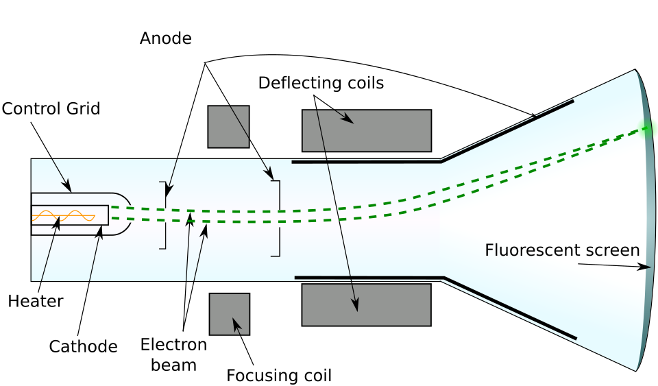

Physics · Lesson 18
Cathode Ray Tube
Heat a metal filament in a vacuum, and electrons boil off. Accelerate them with an electric field, focus them into a beam, and steer them with electric or magnetic fields. This is the cathode ray tube — the technology behind every oscilloscope, radar display, and television screen before flat panels.
Who Was J.J. Thomson?
J.J. Thomson (1856–1940) discovered the electron in 1897 using a cathode ray tube, measuring the electron's charge-to-mass ratio (e/m) by balancing electric and magnetic deflection forces. He showed that cathode rays were streams of particles far smaller than atoms — the first subatomic particle ever identified. He was awarded the Nobel Prize in Physics in 1906. His discovery launched atomic physics and fundamentally changed our picture of matter.
Core Concepts

Thermionic Emission & Acceleration
A heated cathode emits electrons. An anode at higher potential V accelerates them. All the electrical potential energy converts to kinetic energy:
Electric Deflection
Deflection plates create a transverse electric field E. The beam is deflected by force F = eE as it passes between the plates.
Magnetic Deflection
Interactive Simulator
Adjust voltage and deflection in the panel. Switch between Static Dot and Oscilloscope modes.
Real-World Applications
Practice Problems
Use e = 1.6×10⁻¹⁹ C, m = 9.1×10⁻³¹ kg.
Easy1. Electrons in a CRT are emitted from the cathode. True or False?
Easy2. What happens to an electron beam passing through an electric field perpendicular to its motion?
Medium3. An electron is accelerated through 1000 V. What is its speed in m/s? Use ½mv²=eV. Give answer to 2 significant figures (×10⁷).
Medium4. In magnetic deflection, F = evB. If B=0.01 T, v=2×10⁷ m/s, e=1.6×10⁻¹⁹ C, what is the force in ×10⁻¹⁴ N?
Challenge5. Thomson balanced E=10⁴ V/m and B=0.01 T so the beam went straight (eE = evB). What is the electron speed in ×10⁶ m/s?
Innovator Profile · See Also